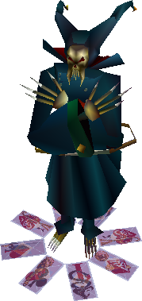

Joker

×

El joker es un monstruo sin debilidades. Suelen aparecer en los alrededores del desierto.
| Nivel | 15 | |
|---|---|---|
| Experiencia | 150 | |
| Vida | 700 | |
| Magia | 200 | |
| Movimientos | Cartas* | |
| Objetos | Dados |